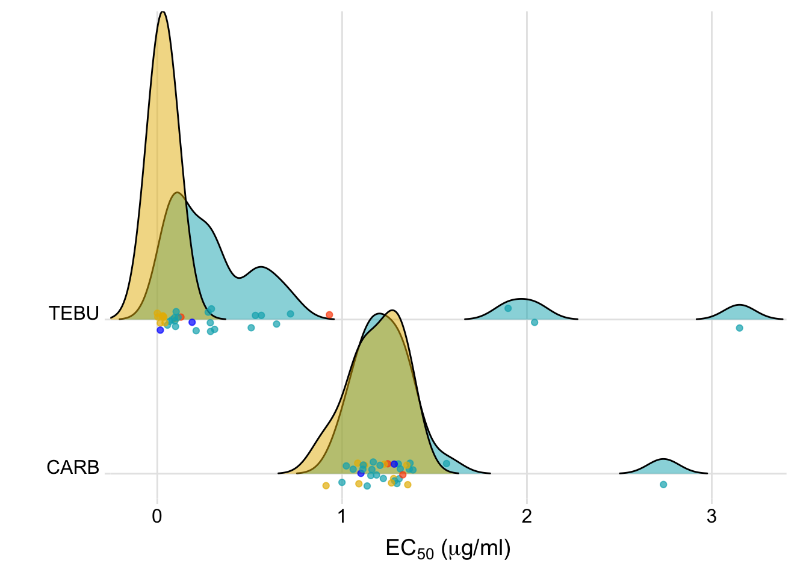
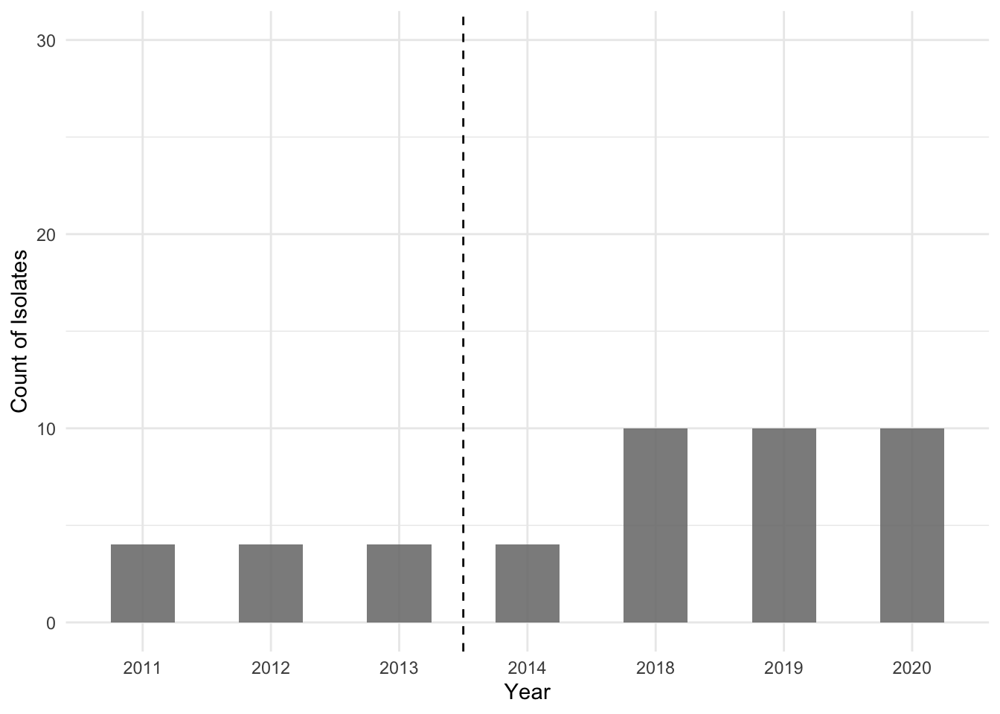

library(readxl)
library(tidyverse)
# library(ec50estimator)
library(cowplot)
library(ggthemes)
# library(drc)
# library(ggridges)
# library(epiR)
# library(car)
library(gsheet)
library(patchwork)
library(rnaturalearth)
library(ggmap)
library(ggrepel)
# library(lme4)
# library(lmerTest)
# library(ggsn)
library(agricolae)
library(easyanova)Reproducible report:
Resistance to tebuconazole and carbendazim in Fusarium graminearum population
R Packages
All packages used during this work.
Isolates
All isolates used in this study with their location were loaded to plotting the map below.
data_load <- gsheet2tbl("https://docs.google.com/spreadsheets/d/1JwJivEu1M6yb4tMcpXdWiWBSl8rroB8x/edit#gid=531845475") %>%
mutate(genotype = case_when(genotype == "XXX" ~ "Failed",
TRUE ~ genotype))
data_load# A tibble: 227 × 9
id code location year genotype state country lon lat
<dbl> <chr> <chr> <dbl> <chr> <chr> <chr> <dbl> <dbl>
1 1 UEM-2545 Turvo 2011 15ADON PR Brazil -51.5 -25.0
2 2 UEM-2546 Turvo 2011 15ADON PR Brazil -51.5 -25.0
3 3 UEM-2551 Guarapuava 2011 15ADON PR Brazil -51.5 -25.4
4 4 UEM-2553 Guarapuava 2011 15ADON PR Brazil -51.5 -25.4
5 5 UEM-2554 Guarapuava 2011 15ADON PR Brazil -51.5 -25.4
6 6 UEM-2555 Guarapuava 2011 15ADON PR Brazil -51.5 -25.4
7 7 UEM-2562 Goioxim 2011 15ADON PR Brazil -52.0 -25.1
8 8 UEM-2580 Guarapuava 2011 15ADON PR Brazil -51.5 -25.4
9 9 UEM-2628 Candói 2011 15ADON PR Brazil -51.9 -25.5
10 10 UEM-2636 Guarapuava 2011 15ADON PR Brazil -51.5 -25.4
# ℹ 217 more rowsBy year and state
map_all = data_load %>%
group_by(year, state, genotype) %>%
summarise(n = length(code))
map_all# A tibble: 11 × 4
# Groups: year, state [4]
year state genotype n
<dbl> <chr> <chr> <int>
1 2011 PR 15ADON 55
2 2012 PR 15ADON 22
3 2012 PR 3ADON 2
4 2012 PR Failed 7
5 2012 PR NIV 29
6 2013 PR 15ADON 49
7 2013 PR 3ADON 6
8 2013 PR Failed 2
9 2013 PR NIV 34
10 2014 PR 15ADON 19
11 2014 PR NIV 2By year in PR
p1 <- map_all %>%
filter(state=="PR") %>%
ggplot()+
# ylim(0,60)+
geom_col(aes(factor(year), y= n, fill = genotype), position = "stack",width = 0.5, alpha=0.9)+
# ggthemes::scale_fill_calc()+
theme_minimal()+
theme(legend.position = "bottom",
legend.key.size = unit(0.3, 'cm')
# legend.position = c(0.1,0.8),
# legend.justification = c("left", "top")
)+
scale_fill_manual(values=c("#00AFBB","blue", "#E7B800", "#FC4E07"), breaks=c('15ADON', '3ADON', 'NIV', 'Failed'))+ #"#00AFBB", "#E7B800", "#FC4E07"
labs(x = "Year", y = "Count of Isolates", fill="")+
ylim(0,100)
p1# ggsave("figs/n_year_rs.png",width = 5, height = 3, dpi = 300)# install.packages("devtools")
# devtools::install_github("ropensci/rnaturalearthhires")
library("rnaturalearth")
BRA <- ne_states(country = "Brazil",
returnclass = "sf")By municipality
map_all_1 = data_load %>%
group_by(state, location) %>%
summarise(n = length(code),
lat=mean(lat),
long= mean(lon))
map_all_1# A tibble: 17 × 5
# Groups: state [1]
state location n lat long
<chr> <chr> <int> <dbl> <dbl>
1 PR ?? 1 -25.3 -52.0
2 PR Campina do Simão 11 -25.1 -51.8
3 PR Candói 17 -25.5 -51.9
4 PR Cantagalo 13 -25.4 -52.1
5 PR Fomento 2 -25.4 -49.3
6 PR Foz do Jordão 6 -25.7 -52.1
7 PR Goioxim 16 -25.1 -52.0
8 PR Guarapuava 79 -25.4 -51.5
9 PR Manoel Ribas 3 -24.5 -51.7
10 PR Palmeirinha 2 -25.2 -51.5
11 PR Pinhão 22 -25.7 -51.7
12 PR Pitanga 7 -24.8 -51.8
13 PR Reserva do Iguaçu 8 -25.8 -52.0
14 PR Roncador 15 -24.6 -52.3
15 PR Santa M. do Oeste 3 -24.9 -51.9
16 PR Teixeira Soares 5 -25.3 -50.4
17 PR Turvo 17 -25.0 -51.5Map of isolates
p2 <- ggplot() +
geom_sf(data = BRA, fill = "gray80",color = "white")+
geom_point(data = map_all_1, aes(as.numeric(long),as.numeric(lat), size=n), fill = "#4c7e16" ,shape = 21, width = 0.9)+
geom_text_repel(data = map_all_1, aes(as.numeric(long),as.numeric(lat), label=(n)), size = 4, box.padding = 0.2, min.segment.length =1, seed = F, max.overlaps = Inf)+
xlim(-56,-48)+
ylim(-33,-23)+
# xlim(-54.9, -47.8)+
# ylim(-30.8,-22.3)+
#scale_size_continuous(breaks = seq(1,10, by = 1), range = c(1, 6))+
# facet_grid(~year)+
theme_map()+
# scale_color_manual(values = c("orange","black"))+
# scale_fill_manual(values = c("orange","black"))+
# guides(color=F, size=F)+
theme(legend.position = "none",
strip.background = element_blank(),
strip.text = element_text(face="bold", size=16),text = element_text(size=16)
)+
#theme(legend.position = "top",
#legend.title=element_text(size=10, face = "bold"),
#legend.text=element_text(size=9),
#, panel.background = element_rect(fill = "grey96"),
#strip.text = element_text(face="bold", size=16),text = element_text(size=16)
#legend.position = c(0, 0)
#legend.justification = c("top")
#legend.margin = margin(-12, 0, 0, 0)
#)+
labs(fill="", size="", x="", y="", color="" )
# annotate("text", x=-53, y=-24, label="PR", size=4)+
# annotate("text", x=-54, y=-30, label="RS", size=4)
p2 # ggsave("figs/map_new_5.png", dpi= 600, height = 8, width = 8 )EC50
In this study, we characterize the phenotype of a sample of 35 Fusarium graminearum isolates to tebuconazole and carbendazim.
Data
This database contains information about all mycelial growth tests conducted, divided by: experiment and geographic collection.
mycelial_assay<- gsheet2tbl("https://docs.google.com/spreadsheets/d/11N56uIawd82YdHDG9W7CnPWrO0oWnEGd/edit#gid=1544594798") %>%
mutate(mycelial_growth = as.numeric(`cm-6`),
dose = as.numeric(dose))
# group_by(isolate, dose) %>%
# dplyr::mutate(GC = as.numeric(GC)) %>%
# dplyr::mutate(Dose = as.numeric(Dose))
mycelial_assay# A tibble: 350 × 10
isolate dose cm `cm-6` inib reduct fungicide year genotype
<chr> <dbl> <dbl> <dbl> <dbl> <dbl> <chr> <dbl> <chr>
1 2794 0 72.0 66.0 0 100 CARB 2011 15ADON
2 2794 0.5 56.8 50.8 23.0 77.0 CARB 2011 15ADON
3 2794 1 40.9 34.9 47.1 52.9 CARB 2011 15ADON
4 2794 2 19.9 13.9 79.0 21.0 CARB 2011 15ADON
5 2794 4 6 0 100 0 CARB 2011 15ADON
6 2832 0 75.4 69.4 0 100 CARB 2011 15ADON
7 2832 0.5 75.6 69.6 -0.364 100. CARB 2011 15ADON
8 2832 1 49.8 43.8 36.8 63.2 CARB 2011 15ADON
9 2832 2 20.6 14.6 78.9 21.1 CARB 2011 15ADON
10 2832 4 6 0 100 0 CARB 2011 15ADON
# ℹ 340 more rows
# ℹ 1 more variable: mycelial_growth <dbl>Visualization
mycelial_assay %>%
ggplot(aes(as.factor(dose), mycelial_growth, color=genotype))+
stat_summary(fun.data = "mean_cl_boot",
geom = "errorbar",
width = 0,
size =.5,
position = position_dodge(width=.5))+
stat_summary(fun = "mean",
size = 1.4,
geom = "point",
position = position_dodge(width=.5))+
facet_wrap(~isolate)+
# scale_color_colorblind()+
theme_minimal_hgrid()+
labs(x = expression(Dose~~(μg/ml)),
y = "Mycelial growth (mm)", color="Genotype")Linearized data by isolate
mycelial_assay %>%
filter(dose != "0") %>%
ggplot(aes(log(dose), inib, color = fungicide) )+
geom_smooth(method="lm", fullrange = TRUE, se = T, size = 0.5)+
geom_point(alpha = 0.5, size=3)+
facet_wrap(~ isolate)+
# theme_cowplot()+
# background_grid(major = "xy", size.major = 0.5, size.minor = 0.5) +
theme_minimal_hgrid()+
theme(legend.position="top")+
labs(x = 'log(dose)',
y = "Inhibition of Mycelial growth (%)", color="Genotype")EC50 estimates
# fit linear regression model to each isolate (inib ~ log(dose)) and estimates the EC50
ec <- mycelial_assay %>%
filter(dose != "0") %>%
group_by(year, isolate, fungicide, genotype) %>%
do(broom::tidy(lm(.$inib ~ log(.$dose)))) %>%
dplyr::select(year, isolate, fungicide, genotype, term, estimate) %>%
group_by(year, isolate, fungicide) %>%
spread(term, estimate) %>%
setNames( c("year", "isolate", "fungicide", "genotype", "intercept", "slope")) %>%
mutate(ec50 = exp((50 - intercept)/slope))Descritive
ec %>%
ggplot(aes(x = ec50)) +
geom_histogram(fill=I("white"), col=I("black")) +
facet_wrap(~ fungicide, ncol=2, scales= "free")+
theme_minimal()+
labs(x = (expression(paste('EC'[50], ' (', mu,'g/ml)'))), y = "Number of isolates")p3 <- ec %>%
# filter(genotype != "XXX") %>%
mutate(genotype = case_when(genotype == "XXX" ~ "Failed",
TRUE ~ genotype
)) %>%
ggplot(aes(x = ec50, fungicide, fill = genotype)) +
ggjoy::geom_joy(scale = 2, alpha = .5, rel_min_height = 0.001) +
geom_jitter(alpha=0.7, height = 0.08, size = 1.5, aes(color = genotype))+
scale_y_discrete(expand = c(0.01, 0.15)) +
scale_x_continuous(expand = c(0, 0))+
#ylim(0,1.05)+
ggjoy::theme_joy()+
scale_fill_manual(values=c("#00AFBB","blue", "#E7B800", "#FC4E07"), breaks=c('15ADON', '3ADON', 'NIV', 'Failed'))+ #"#00AFBB", "#E7B800", "#FC4E07"
scale_color_manual(values=c("#00AFBB","blue", "#E7B800", "#FC4E07"), breaks=c('15ADON', '3ADON', 'NIV', 'Failed'))+ #"#00AFBB", "#E7B800", "#FC4E07"
theme(legend.position = "none",
#legend.title=element_text(size=10, face = "bold"),
#legend.text=element_text(size=9),
#legend.margin = margin(6, 6, 6, 6),
#axis.text = element_text(size=12),
# legend.position = c(1, 1.05),
# legend.justification = c("right", "top"),
#plot.margin = unit(c(2,0,0,0), "lines"),
axis.title.x = element_text(hjust=0.5))+
labs(x = (expression(paste('EC'[50], ' (', mu,'g/ml)'))), y = "", fill = "Genotype", color = "Genotype")
p3
FIGURE 1
(p2 | (p1/p3)) +
plot_annotation(tag_levels = "A")+
plot_layout(widths = c(1,1))
ggsave("figs/figure1.png", width =7, height = 5)Statistics
ec_stats <- ec %>%
filter(genotype != "XXX") %>%
mutate(genotype = case_when(genotype == "15ADON" ~ "15ADON",
genotype == "3ADON" ~ "NIV+3ADON",
genotype == "NIV" ~ "NIV+3ADON"))
ec_stats %>%
#filter(Population=="PR") %>%
group_by(fungicide, genotype) %>%
summarise(n = length(isolate),
mean=mean(ec50),
se=sd(ec50)/sqrt(n),
min = min(ec50),
median=median(ec50),
max = max(ec50),
lower= quantile(ec50, 0.25),
upper= quantile(ec50, 0.75))# A tibble: 4 × 10
# Groups: fungicide [2]
fungicide genotype n mean se min median max lower upper
<chr> <chr> <int> <dbl> <dbl> <dbl> <dbl> <dbl> <dbl> <dbl>
1 CARB 15ADON 22 1.29 0.0745 0.999 1.21 2.74 1.14 1.31
2 CARB NIV+3ADON 11 1.19 0.0412 0.913 1.23 1.36 1.10 1.28
3 TEBU 15ADON 22 0.565 0.168 0.0552 0.288 3.15 0.0996 0.555
4 TEBU NIV+3ADON 11 0.0449 0.0165 0.000389 0.0298 0.189 0.0162 0.0386KS test
carb <- ec_stats %>%
filter(fungicide == "CARB") %>%
spread(genotype, ec50)
ks.test(carb$`15ADON`, carb$`NIV+3ADON`)
Two-sample Kolmogorov-Smirnov test
data: carb$`15ADON` and carb$`NIV+3ADON`
D = 0.27273, p-value = 0.6302
alternative hypothesis: two-sidedtebu <- ec_stats %>%
filter(fungicide == "TEBU") %>%
spread(genotype, ec50)
ks.test(tebu$`15ADON`, tebu$`NIV+3ADON`)
Two-sample Kolmogorov-Smirnov test
data: tebu$`15ADON` and tebu$`NIV+3ADON`
D = 0.81818, p-value = 2.852e-05
alternative hypothesis: two-sidedoverall <- ec_stats %>%
# filter(fungicide == "CARB") %>%
spread(fungicide, ec50)
ks.test(overall$`CARB`, overall$`TEBU`)
Two-sample Kolmogorov-Smirnov test
data: overall$CARB and overall$TEBU
D = 0.90909, p-value = 1.277e-14
alternative hypothesis: two-sided##Boxplot carb
box_carb <- ec_stats %>%
filter(fungicide == "CARB") %>%
ggplot(aes(genotype, ec50))+
geom_jitter(size=2, color = "black", width = 0.05)+
ylim(0,4)+
geom_boxplot(width=0.5, outlier.color = NA, color= "black", fill = NA, size =1)+
scale_color_colorblind()+
#geom_hline(yintercept = 5, color="red")+
#annotate("text", x=2.5,y=5.5, label="DD", size=4, color="red")+
#facet_wrap("Population")+
geom_hline(yintercept = 1.4, color="red", linetype = "dashed")+
theme_minimal_hgrid()+
labs(y = expression(EC[50]~~μg/ml),
x="")
# ggsave("figs/box_AZOX_2.png", dpi = 500, height = 3.5, width = 5)
box_carb##Boxplot TEBU
box_teb <- ec_stats %>%
filter(fungicide == "TEBU") %>%
ggplot(aes(genotype, ec50))+
geom_jitter(size=2, color = "black", width = 0.05)+
ylim(0,4)+
geom_boxplot(width=0.5, outlier.color = NA, color= "black", fill = NA, size =1)+
scale_color_colorblind()+
#geom_hline(yintercept = 5, color="red")+
#annotate("text", x=2.5,y=5.5, label="DD", size=4, color="red")+
#facet_wrap("Population")+
geom_hline(yintercept = 2, color="red", linetype = "dashed")+
theme_minimal_hgrid()+
labs(y = expression(EC[50]~~μg/ml),
x="")
# ggsave("figs/box_AZOX_2.png", dpi = 500, height = 3.5, width = 5)
box_tebFIGURE 2
(box_teb | box_carb)+
plot_annotation(tag_levels = 'A')ggsave("figs/figure2.png", width = 8, height =5)Correlation EC50
cor_ec50 <- ec %>%
dplyr::select(year,isolate, genotype, ec50) %>%
group_by(year, isolate, genotype) %>%
spread(fungicide, ec50) %>%
mutate(log_carb=log(CARB),
log_teb=log(TEBU))
cor_ec50# A tibble: 35 × 7
# Groups: year, isolate, genotype [35]
year isolate genotype CARB TEBU log_carb log_teb
<dbl> <chr> <chr> <dbl> <dbl> <dbl> <dbl>
1 2011 2546 15ADON 1.38 0.531 0.325 -0.633
2 2011 2551 15ADON 1.37 0.0552 0.313 -2.90
3 2011 2655 15ADON 1.56 0.645 0.448 -0.438
4 2011 2662 15ADON 1.36 2.04 0.310 0.714
5 2011 2702 15ADON 1.22 0.102 0.201 -2.28
6 2011 2727 15ADON 1.14 0.0681 0.127 -2.69
7 2011 2781 15ADON 1.30 0.293 0.266 -1.23
8 2011 2794 15ADON 1.02 0.0807 0.0225 -2.52
9 2011 2816 15ADON 1.31 1.90 0.274 0.641
10 2011 2832 15ADON 1.31 0.721 0.269 -0.327
# ℹ 25 more rowscor.test((cor_ec50$log_carb), (cor_ec50$log_teb), method ="spearman")
Spearman's rank correlation rho
data: (cor_ec50$log_carb) and (cor_ec50$log_teb)
S = 3874, p-value = 0.006193
alternative hypothesis: true rho is not equal to 0
sample estimates:
rho
0.457423 cor.test((cor_ec50$CARB), (cor_ec50$TEBU), method ="spearman")
Spearman's rank correlation rho
data: (cor_ec50$CARB) and (cor_ec50$TEBU)
S = 3874, p-value = 0.006193
alternative hypothesis: true rho is not equal to 0
sample estimates:
rho
0.457423 cor_ec50 %>%
ggplot(aes(CARB, TEBU, fill = genotype))+
#geom_smooth(method=lm)+
geom_point(shape=21, size=3)+
theme_minimal()+
scale_fill_manual(values=c("#00AFBB","blue", "#E7B800", "#FC4E07"), breaks=c('15ADON', '3ADON', 'NIV', 'XXX')) cor_ec50 %>%
ggplot(aes(log_carb, log_teb, fill = genotype))+
#geom_smooth(method=lm)+
geom_point(shape=21, size=3)+
theme_minimal()+
labs(x =expression(Log~(EC[50])~~μg/ml~Carbendazim), y = expression(Log~(EC[50])~~μg/ml~Tebuconazole, color=""))+
scale_fill_manual(values=c("#00AFBB","blue", "#E7B800", "#FC4E07"), breaks=c('15ADON', '3ADON', 'NIV', 'XXX')) # ggsave("figs/cor_ec50_log.png", dpi = 500)DISCRIMINATORY DOSES
We also screening isolates through discriminatory dose for each fungicide.
Dataset - 2011-2014
dd_2014_all <- gsheet2tbl("https://docs.google.com/spreadsheets/d/1JwJivEu1M6yb4tMcpXdWiWBSl8rroB8x/edit#gid=473031057")
dd_2014 <- dd_2014_all %>%
mutate(test = (test1 + test2)/2,
teb = (teb1 + teb2)/2,
carb = (carb1 + carb2)/2,
teb_2ppm = (teb_dose2_rep1 + teb_dose2_rep2)/2) %>%
mutate(disc_carb = (carb/test)*100,
disc_teb = (teb/test)*100,
disc_teb2 = (teb_2ppm/test)*100,
resis_carb = case_when(disc_carb > 50 ~ "carb R",
disc_carb < 50 ~ "carb S"),
resis_teb = case_when(disc_teb > 50 ~ "tebu R",
disc_teb < 50 ~ "tebu S"),
resis_teb2 = case_when(disc_teb2 > 50 ~ "tebu R",
disc_teb2 < 50 ~ "tebu S"
)) %>%
pivot_longer(cols = starts_with("resis"), names_to = "sensitivity", values_to = "valor") %>%
filter(valor != "carb S",
valor != "tebu S")
dd_2014 %>%
ggplot(aes(sensitivity, code, fill = valor))+
# geom_boxplot(outlier.colour = NA) +
geom_tile(color = "white", size = 1)+
facet_grid(~rep_discrim)+
theme_minimal()# openxlsx::write.xlsx(dd_2014, 'dd_2014.xlsx')
phenotype_2014 <- dd_2014_all %>%
filter(rep_discrim == "1") %>%
dplyr::select(strain = code, year, genotype, location) %>%
mutate(phenotype_carb = case_when(strain == "3523" ~ "carb R",
strain == "3325" ~ "carb R",
strain == "3097" ~ "carb R",
strain == "2657" ~ "carb R",
strain == "2655" ~ "carb R",
strain == "2536" ~ "carb R",
strain == "2519" ~ "carb R",
strain == "2492" ~ "carb R",
strain == "008/13" ~ "carb R",
TRUE ~ "carb S"),
phenotype_teb = case_when(strain == "2662" ~ "tebu R",
strain == "2657" ~ "tebu R",
strain == "2536" ~ "tebu R",
strain == "13/13" ~ "tebu R",
strain == "008/13" ~ "tebu R",
TRUE ~ "tebu S"))Dataset 2018+ isolates
dd_2018_1 <- gsheet2tbl("https://docs.google.com/spreadsheets/d/1-affIwXi84QYDKHc9qeLwKYnyccLMg2Q/edit#gid=1479034531") %>%
# read_excel("disc_dose_2018.xlsx", 1) %>%
# read_excel("avaliação original_gabriel.xlsx", 1) %>%
mutate(rep_discrim = 1)
dd_2018_all <- gsheet2tbl("https://docs.google.com/spreadsheets/d/1-affIwXi84QYDKHc9qeLwKYnyccLMg2Q/edit#gid=13480782") %>%
mutate(rep_discrim = 2) %>%
bind_rows(dd_2018_1) %>%
pivot_longer(cols = starts_with("dam"), names_to = "diametro", values_to = "valor") %>%
mutate(valor = as.numeric(valor),
strain = as.factor(code),
rep_discrim = as.factor(rep_discrim)) %>%
group_by(rep_discrim, location, state, year,strain, product, conc, rep) %>%
summarise(mean = mean(valor)) %>%
filter(year != "controls")
dd_2018_all %>%
ggplot(aes(rep_discrim, mean, fill = product))+
geom_boxplot(outlier.colour = NA,position = position_dodge()) +
labs(y = "Diameter (mm)")Create variables relative to non-treated check
dd_2018 <- dd_2018_all %>%
group_by(rep_discrim, strain, product,year) %>%
summarise(mean = mean(mean)) %>%
spread(product, mean) %>%
mutate(disc_bendazol = (bendazol/test)*100,
disc_tebufort = (tebufort/test)*100,
resis_carb = case_when(disc_bendazol > 50 ~ "carb R",
disc_bendazol < 50 ~ "carb S"),
resis_teb = case_when(disc_tebufort > 50 ~ "tebu R",
disc_tebufort < 50 ~ "tebu S")) %>%
pivot_longer(cols = starts_with("resis"), names_to = "sensitivity", values_to = "valor") %>%
filter(valor != "carb S",
valor != "tebu S")
dd_2018 %>%
ggplot(aes(sensitivity, strain, fill = valor))+
# geom_boxplot(outlier.colour = NA) +
geom_tile(color = "white", size = 1)+
facet_grid(~rep_discrim)+
theme_minimal()phenotype_2018 <- dd_2018 %>%
filter(rep_discrim == "1") %>%
dplyr::select(strain, year) %>%
mutate(location = "Guarapuava",
genotype = "15ADON",
phenotype_carb = case_when(strain == "6149" ~ "carb S",
TRUE ~ "carb R"),
phenotype_teb = case_when(strain == "6494" ~ "tebu R",
strain == "6489" ~ "tebu R",
strain == "6450" ~ "tebu R",
strain == "6449" ~ "tebu R",
strain == "6149" ~ "tebu R",
strain == "6074" ~ "tebu R",
TRUE ~ "tebu S"))Plot
plot_dd <- phenotype_2014 %>%
bind_rows(phenotype_2018) %>%
mutate(genotype = case_when(genotype == "XXX" ~ "Failed",
TRUE ~ genotype)) %>%
pivot_longer(cols = starts_with("phenot"), names_to = "var", values_to = "phenotype") %>%
mutate(population = case_when(year < 2015 ~ "<2014",
year > 2015 ~ ">2014")) %>%
group_by(population, phenotype) %>%
summarise(n = length(strain))
number_sensitive <- phenotype_2014 %>%
bind_rows(phenotype_2018) %>%
mutate(population = case_when(year < 2015 ~ "<2014",
year > 2015 ~ ">2014")) %>%
group_by(year,population) %>%
summarise(n_sens = length(strain)) %>%
mutate(total_isolates = case_when(population == "<2014" ~ 227,
population == ">2014" ~ 42))
plot_dd <- plot_dd %>%
# mutate(population = case_when(year < 2015 ~ "<2014",
# year > 2015 ~ ">2014")) %>%
left_join(number_sensitive) %>%
filter(phenotype %in% c("tebu R", "carb R" )) %>%
# group_by(phenotype) %>%
# summarise(count = n()) %>%
mutate(prop_year = n/n_sens,
prop_populatio = n/total_isolates) By year - tebu
dd_tebu <- plot_dd %>%
filter(phenotype == "tebu R") %>%
ggplot()+
# ylim(0,60)+
geom_col(aes(factor(year), y= n, fill = phenotype), position = "stack",width = 0.5, alpha=0.9)+
# ggthemes::scale_fill_calc()+
geom_vline(xintercept = 3.5, linetype = "dashed")+
theme_minimal()+
# facet_grid(~phenotype)+
theme(legend.position = "bottom",
legend.key.size = unit(0.3, 'cm')
# legend.position = c(0.1,0.8),
# legend.justification = c("left", "top")
)+
# scale_fill_discrete(breaks=c('15ADON', '3ADON', 'NIV', 'Failed'))+
labs(x = "Year", y = "Count of Isolates", fill="")+
ylim(0,30)+
scale_fill_manual(values=c("#00AFBB","blue", "#E7B800", "#FC4E07"), breaks=c('15ADON', '3ADON', 'NIV', 'Failed'))
dd_tebu
# ggsave("figs/n_year_rs.png",width = 5, height = 3, dpi = 300)By year - tebu
dd_carb <- plot_dd %>%
filter(phenotype == "carb R") %>%
ggplot()+
# ylim(0,60)+
geom_col(aes(factor(year), y= n, fill = phenotype), position = "stack",width = 0.5, alpha=0.9)+
# ggthemes::scale_fill_calc()+
theme_minimal()+
geom_vline(xintercept = 3.5, linetype = "dashed")+
# facet_grid(~phenotype)+
theme(legend.position = "bottom",
legend.key.size = unit(0.3, 'cm')
# legend.position = c(0.1,0.8),
# legend.justification = c("left", "top")
)+
# scale_fill_discrete(breaks=c('15ADON', '3ADON', 'NIV', 'Failed'))+
labs(x = "Year", y = "Count of Isolates", fill="")+
# scale_x_discrete(limits = c(2011, 2012), breaks = seq(2011, 2022, by = 1))+
ylim(0,30)+
scale_fill_manual(values=c("#00AFBB","blue", "#E7B800", "#FC4E07"), breaks=c('15ADON', '3ADON', 'NIV', 'Failed'))
dd_carb# ggsave("figs/n_year_rs.png",width = 5, height = 3, dpi = 300)FIGURE 3
(dd_tebu | dd_carb)+
plot_annotation(tag_levels = 'A')+
plot_layout(widths = c(1, 1),
guides = "collect") &
theme(legend.position = "bottom")ggsave("figs/figure3.png", width = 7, height =4)INOCULATIONS - control efficacy assays
The two greenhouse and field experiment combined
dat_field <- gsheet2tbl("https://docs.google.com/spreadsheets/d/1Q2p-i1-Xqw5uCurY28c4o4hU_KQC3Ne_/edit#gid=148124723") %>%
# read_excel("exp-viveiro.xlsx", 1) %>%
mutate(exp = "field", trial = "Field")
dat_efficacy <- gsheet2tbl("https://docs.google.com/spreadsheets/d/1-hldYVo0tRwBO7gMM6R3VyJFkv2QI090/edit#gid=1351986665") %>%
mutate(trial = "Greenhouse") %>%
# read_excel("exp.xlsx", 3) %>%
bind_rows(dat_field) %>%
filter(#exp == "1",
isol != "test",
n_spikelets != "NA") %>%
group_by(exp, isol, fung, block, trial) %>%
gather(dia, doentes, 6:8) %>%
mutate (day = as.numeric(dia)) %>%
mutate(sev = (doentes/n_spikelets)*100) %>%
unite(trat, isol, fung, sep = ".", remove = F)Preparing dataset
Create variables auspc
# calculate area under severity curve (auspc)
exp_audpc <- dat_efficacy %>%
group_by(exp,trial, trat, isol, fung, block) %>%
summarise(audpc = audpc(sev, day, type = "absolute")) Descriptive
dat_efficacy %>%
group_by(trial, trat, fung, isol, day) %>%
summarize(media_sev = mean(sev, na.rm=TRUE),
sd_sev = sd(sev, na.rm=TRUE),
n = length(sev),
se_sev = sd_sev / sqrt(n),
ic_sev = qt(0.975, df = n - 1) * se_sev) %>%
ggplot(., aes(day, media_sev, color= fung)) +
geom_point(size=2)+
geom_line()+
geom_errorbar(aes(ymin = media_sev-ic_sev,ymax = media_sev+ic_sev), width=0.4, size= 0.7)+
facet_grid(trial~isol)+
scale_x_continuous(breaks=c(5, 10, 15))+
labs(y = "Severity (%)", x = "Days after inoculation", color = "Fungicide") +
#theme_minimal()+
scale_color_viridis_d(begin = 0.8, end = 0.1)+
theme(legend.position="top", strip.text = element_text(face="bold"))Stats
Greenhouse
stats_gh <- exp_audpc %>%
filter(trial == "Greenhouse",
fung != "metc")
model <- aov (audpc ~ block + fung*isol*exp , data=stats_gh) ## triple interaction not significant
anova(model)Analysis of Variance Table
Response: audpc
Df Sum Sq Mean Sq F value Pr(>F)
block 1 28400 28400 1.3691 0.24510
fung 2 1348392 674196 32.5002 2.53e-11 ***
isol 4 895138 223784 10.7877 3.56e-07 ***
exp 1 41816 41816 2.0158 0.15917
fung:isol 8 78154 9769 0.4709 0.87361
fung:exp 2 182210 91105 4.3918 0.01517 *
isol:exp 4 61185 15296 0.7374 0.56893
fung:isol:exp 8 175247 21906 1.0560 0.40115
Residuals 89 1846246 20744
---
Signif. codes: 0 '***' 0.001 '**' 0.01 '*' 0.05 '.' 0.1 ' ' 1stats_gh <- exp_audpc %>%
filter(trial == "Greenhouse")
anova_gh <- stats_gh %>%
# filter(cultivar == "264"
# # product != "Fox Xpro",
# # product != "Fox Xpro+Bendazol"
# ) %>%
ungroup() %>%
select(fung, isol, block, audpc) %>%
# mutate(sev = asin(sqrt(sev/100))) %>%
# mutate(sev = sqrt(sev)) %>%
# mutate(sev = log(sev+0.01)) %>%
ea2(design = 2)anova_gh$`Analysis of variance` df type III SS mean square F value p>F
factor_1 3 1460623.94 486874.65 22.5248 <0.001
factor_2 4 943652.67 235913.17 10.9143 <0.001
blocks 3 47086.77 15695.59 0.7261 0.5384
factor_1:factor_2 12 154098.40 12841.53 0.5941 0.8433
residuals 117 2528965.52 21615.09 - -gh_factor1 <- anova_gh$`Adjusted means (factor 1)` %>%
#left_join(altura_plantas_2) %>%
# mutate(control = round((1-(adjusted.mean/454.4500))*100,0)) %>%
#mutate(control = round((1-(response/261.4))*100,1)) %>%
ggplot() +
geom_errorbar(aes(`factor_1`, adjusted.mean, color = scott_knott, ymin = adjusted.mean - standard.error, ymax = adjusted.mean + standard.error), size = 1, width = 0.1)+
geom_point(aes(`factor_1`, adjusted.mean, color = scott_knott), size = 3)+
#geom_jitter(aes(Tratamentos, height_mean), size= 1, width =0.1, alpha = 0.7)+
labs (x = "Factor 1",
y = "Adjusted AUDPC mean",
color = "") +
ggthemes::scale_color_calc()+
#scale_alpha_discrete(range = c(0.2, 1))+
theme_minimal_hgrid()+
# coord_flip()+
theme(legend.position= "none")+
# geom_text(aes(x = `factor_1`, y = 0,
# label = control))+
scale_y_continuous(breaks=seq(0,500,100), limits = c(-5,502), expand = c(0,0))Control efficacy
Factor 1 (fungicide spray)
anova_gh$`Adjusted means (factor 1)` %>%
mutate(control = round((1-(adjusted.mean/454.4500))*100,0)) factor_1 adjusted.mean standard.error tukey snk duncan t scott_knott control
1 untreated 454.4500 23.2460 a a a a a 0
2 carb 341.0885 23.2460 b b b b b 25
3 metc 249.4222 32.8748 bc c c c c 45
4 tebu 195.4661 23.2460 c c c c c 57Factor 2 (isolates)
anova_gh$`Adjusted means (factor 2)` factor_2 adjusted.mean standard.error tukey snk duncan t scott_knott
1 S 391.7113 29.0575 a a a a a
2 S_R2 370.0884 29.0575 a a a a a
3 R2 327.0160 29.0575 a a a a a
4 S_R1 313.7986 29.0575 a a a a a
5 R1 147.9193 29.0575 b b b b bgh_factor2 <- anova_gh$`Adjusted means (factor 2)` %>%
#left_join(altura_plantas_2) %>%
# mutate(control = round((1-(adjusted.mean/454.4500))*100,0)) %>%
#mutate(control = round((1-(response/261.4))*100,1)) %>%
ggplot() +
geom_errorbar(aes(`factor_2`, adjusted.mean, color = tukey, ymin = adjusted.mean - standard.error, ymax = adjusted.mean + standard.error), size = 1, width = 0.1)+
geom_point(aes(`factor_2`, adjusted.mean, color = tukey), size = 3)+
#geom_jitter(aes(Tratamentos, height_mean), size= 1, width =0.1, alpha = 0.7)+
labs (x = "Factor 2",
y = "Adjusted AUDPC mean",
color = "") +
ggthemes::scale_color_calc()+
#scale_alpha_discrete(range = c(0.2, 1))+
theme_minimal_hgrid()+
theme(legend.position= "none")+
scale_y_continuous(breaks=seq(0,500,100), limits = c(-5,502), expand = c(0,0))Plot
(gh_factor1|gh_factor2) +
plot_layout(widths = c(1,2))+
plot_annotation(tag_levels = 'A') ggsave("figs/figure4_greenhouse.png", width =10, height =5)Field
stats_field <- exp_audpc %>%
filter(trial == "Field")
anova_field <- stats_field %>%
# filter(cultivar == "264"
# # product != "Fox Xpro",
# # product != "Fox Xpro+Bendazol"
# ) %>%
ungroup() %>%
select(fung, isol, block, audpc) %>%
# mutate(sev = asin(sqrt(sev/100))) %>%
# mutate(sev = sqrt(sev)) %>%
# mutate(sev = log(sev+0.01)) %>%
ea2(design = 2)anova_field$`Analysis of variance` df type III SS mean square F value p>F
factor_1 2 213563.54 106781.77 7.4676 0.0017
factor_2 4 54538.29 13634.57 0.9535 0.4429
blocks 3 194467.89 64822.63 4.5332 0.0077
factor_1:factor_2 8 257350.56 32168.82 2.2497 0.0424
residuals 42 600575.73 14299.42 - -Control efficacy
Factor 1 (fungicide spray) in levels of factor 2 (isolates)
anova_field$`Adjusted means (factor 1 in levels of factor 2)`$`factor_1 in R1` %>%
mutate(control = round((1-(adjusted.mean/270.2053))*100,0)) treatment adjusted.mean standard.error tukey snk duncan t scott_knott
1 carb.R1 277.3693 59.7901 a a a a a
3 untreated.R1 270.2053 59.7901 a a a a a
2 tebu.R1 155.7052 59.7901 a a a a a
control
1 -3
3 0
2 42anova_field$`Adjusted means (factor 1 in levels of factor 2)`$`factor_1 in R2` %>%
mutate(control = round((1-(adjusted.mean/189.4570))*100,0)) treatment adjusted.mean standard.error tukey snk duncan t scott_knott
4 carb.R2 234.2218 59.7901 a a a a a
5 tebu.R2 203.2895 59.7901 a a a a a
6 untreated.R2 189.4570 59.7901 a a a a a
control
4 -24
5 -7
6 0anova_field$`Adjusted means (factor 1 in levels of factor 2)`$`factor_1 in S` %>%
mutate(control = round((1-(adjusted.mean/368.7181))*100,0)) treatment adjusted.mean standard.error tukey snk duncan t scott_knott
9 untreated.S 368.7181 59.7901 a a a a a
8 tebu.S 204.6394 59.7901 a a ab ab b
7 carb.S 179.8791 59.7901 a a b b b
control
9 0
8 44
7 51anova_field$`Adjusted means (factor 1 in levels of factor 2)`$`factor_1 in S_R1` %>%
mutate(control = round((1-(adjusted.mean/382.7263))*100,0)) treatment adjusted.mean standard.error tukey snk duncan t scott_knott
12 untreated.S_R1 382.7263 59.7901 a a a a a
11 tebu.S_R1 340.0219 59.7901 a a ab ab a
10 carb.S_R1 179.3155 59.7901 a a b b b
control
12 0
11 11
10 53anova_field$`Adjusted means (factor 1 in levels of factor 2)`$`factor_1 in S_R2` %>%
mutate(control = round((1-(adjusted.mean/459.8630))*100,0)) treatment adjusted.mean standard.error tukey snk duncan t scott_knott
15 untreated.S_R2 459.8630 59.7901 a a a a a
14 tebu.S_R2 184.4618 59.7901 b b b b b
13 carb.S_R2 127.1242 59.7901 b b b b b
control
15 0
14 60
13 72Factor 2 (isolates) in levels of factor 1 (fungicide spray)
anova_field$`Adjusted means (factor 2 in levels of factor 1)`$`factor_2 in carb` treatment adjusted.mean standard.error tukey snk duncan t scott_knott
1 carb.R1 277.3693 59.7901 a a a a a
4 carb.R2 234.2218 59.7901 a a a a a
7 carb.S 179.8791 59.7901 a a a a a
10 carb.S_R1 179.3155 59.7901 a a a a a
13 carb.S_R2 127.1242 59.7901 a a a a aanova_field$`Adjusted means (factor 2 in levels of factor 1)`$`factor_2 in tebu` treatment adjusted.mean standard.error tukey snk duncan t scott_knott
11 tebu.S_R1 340.0219 59.7901 a a a a a
8 tebu.S 204.6394 59.7901 a a a ab a
5 tebu.R2 203.2895 59.7901 a a a ab a
14 tebu.S_R2 184.4618 59.7901 a a a ab a
2 tebu.R1 155.7052 59.7901 a a a b aanova_field$`Adjusted means (factor 2 in levels of factor 1)`$`factor_2 in untreated` treatment adjusted.mean standard.error tukey snk duncan t scott_knott
15 untreated.S_R2 459.8630 59.7901 a a a a a
12 untreated.S_R1 382.7263 59.7901 ab ab ab ab a
9 untreated.S 368.7181 59.7901 ab ab ac ab a
3 untreated.R1 270.2053 59.7901 ab ab bc bc b
6 untreated.R2 189.4570 59.7901 b b c c bstats_field %>%
ggplot(aes(fung, audpc, fill = isol))+
geom_boxplot(outlier.colour = "grey30", alpha = 0.3, width = 0.5)+
ggthemes::scale_fill_calc()+
theme_minimal_hgrid()+
theme(legend.position = "bottom")+
labs(y = "AUDPC", x = "Fungicide treatment", fill = "Isolates") ggsave("figs/figure5_field.png", width =10, height =5)COMPETIVENESS ASSAY - RECOVERED ISOLATES isolates
rec_exp1 <- gsheet2tbl("https://docs.google.com/spreadsheets/d/11o1jpbWg-DUflcSmqNsxSvxBa55HN58m/edit#gid=1440089261") %>%
mutate(exp = "1") %>%
filter(peer != "NA")
rec_exp2 <- gsheet2tbl("https://docs.google.com/spreadsheets/d/11o1jpbWg-DUflcSmqNsxSvxBa55HN58m/edit#gid=1371468951") %>%
mutate(exp = "2")
rec_comb <- rec_exp2 %>%
filter(fungicide_dish != "carb") %>%
bind_rows(rec_exp1)
rec_comb %>%
# filter(fung == "metc") %>%
# group_by(peer) %>%
summarise(count = n()) %>%
mutate(cut.count = sum(count),
prop = count/sum(count)) # A tibble: 1 × 3
count cut.count prop
<int> <int> <dbl>
1 677 677 1# rec_exp2 <- gsheet2tbl("https://docs.google.com/spreadsheets/d/11o1jpbWg-DUflcSmqNsxSvxBa55HN58m/edit#gid=1371468951") %>%
# filter(fung != "metc") %>%
# bind_rows(rec_exp1)
#
# isol_sr1_exp2 <- rec_exp2 %>%
# filter( isol == "S+R1")
#
# tab_exp2 <- table(isol_sr1_exp2$fung,isol_sr1_exp2$peer, isol_sr1_exp2$fungicide_dish)
# tab_exp2
#
# isol_sr2_exp2 <- rec_exp2 %>%
# filter( isol == "S+R2")
#
# tab_exp2_r2 <- table(isol_sr2_exp2$fung,isol_sr2_exp2$peer, isol_sr2_exp2$fungicide_dish)
# tab_exp2_r2R1
isol_sr1_exp2 <- rec_comb %>%
filter( isol == "S+R1"
# ,
# fung != "carb"
)
tab_exp2 <- table(isol_sr1_exp2$fung,isol_sr1_exp2$peer)
tab_exp2
r1 s
carb 3 79
metc 0 19
tebu 5 63
untreated 1 115chisq.test(tab_exp2)
Pearson's Chi-squared test
data: tab_exp2
X-squared = 6.5991, df = 3, p-value = 0.08583fisher.test(tab_exp2) #usado para contagem ate 6
Fisher's Exact Test for Count Data
data: tab_exp2
p-value = 0.09075
alternative hypothesis: two.sidedmosaicplot(fungicide_dish~ fung*peer, data=isol_sr1_exp2, color =T)length(isol_sr1_exp2$peer)[1] 285# gráfico de mosaico
df_exp2 <- isol_sr1_exp2 %>%
group_by(fung, peer) %>%
summarise(count = n()) %>%
mutate(cut.count = sum(count),
prop = count/sum(count)) %>%
ungroup()
rec_comb_r1 <- df_exp2 %>%
ggplot(aes(x = fung, y = prop, width = cut.count, fill = peer)) +
geom_bar(stat = "identity", position = "fill", alpha = 0.7) +
# scale_fill_grey()+
geom_text(aes(label = count), position = position_stack(vjust = 0.7)) + # if labels are desired
scale_fill_manual(values=c( "#E7B800", "#00AFBB","#FC4E07"), breaks=c('s', 'r1', 'r2'))+
facet_grid(~fung, scales = "free_x", space = "free_x") +
theme_void()
#theme(legend.position="none")+
# ggsave("figs/mosaic_sr1.png", width=3, height=3)
isol_sr1_exp2 %>%
# filter(fung == "untreated") %>%
# filter(fung == "metc") %>%
# filter(fung == "carb") %>%
filter(fung == "tebu") %>%
group_by(peer) %>%
summarise(count = n()) %>%
mutate(cut.count = sum(count),
prop = count/sum(count))# A tibble: 2 × 4
peer count cut.count prop
<chr> <int> <int> <dbl>
1 r1 5 68 0.0735
2 s 63 68 0.926 R2
isol_sr2_exp2 <- rec_comb %>%
filter( isol == "S+R2")
tab_exp2_r2 <- table(isol_sr2_exp2$fung,isol_sr2_exp2$peer)
tab_exp2_r2
r2 s
carb 30 83
metc 3 33
tebu 24 52
untreated 26 115chisq.test(tab_exp2_r2)
Pearson's Chi-squared test
data: tab_exp2_r2
X-squared = 10.068, df = 3, p-value = 0.01799fisher.test(tab_exp2_r2)
Fisher's Exact Test for Count Data
data: tab_exp2_r2
p-value = 0.01571
alternative hypothesis: two.sidedlength(isol_sr2_exp2$peer)[1] 366df_exp2_r2 <- isol_sr2_exp2 %>%
group_by(fung, peer) %>%
summarise(count = n() ) %>%
mutate(cut.count = sum(count),
prop = count/sum(count)) %>%
ungroup()
rec_comb_r2 <- df_exp2_r2 %>%
ggplot(aes(x = fung, y = prop, width = cut.count, fill = peer)) +
geom_bar(stat = "identity", position = "fill", alpha = 0.7) +
# scale_fill_grey()+
geom_text(aes(label = count), position = position_stack(vjust = 0.5)) +
scale_fill_manual(values=c( "#E7B800", "#00AFBB","#FC4E07"), breaks=c('s', 'r1', 'r2'))+
facet_grid(~fung, scales = "free_x", space = "free_x") +
theme_void()
#theme(legend.position="none")+
# ggsave("figs/mosaic_sr2.png", width=3, height=3)
isol_sr2_exp2 %>%
# filter(fung == "untreated") %>%
# filter(fung == "metc") %>%
filter(fung == "carb") %>%
# filter(fung == "tebu") %>%
group_by(peer) %>%
summarise(count = n()) %>%
mutate(cut.count = sum(count),
prop = count/sum(count))# A tibble: 2 × 4
peer count cut.count prop
<chr> <int> <int> <dbl>
1 r2 30 113 0.265
2 s 83 113 0.735FIGURE 4
(rec_comb_r1/rec_comb_r2)+
plot_annotation(tag_levels = 'A')+
plot_layout(widths = c(1, 1),
guides = "collect") &
theme(legend.position = "bottom") &
labs(fill = "")ggsave("figs/figure4_metc2.png", width = 4.5, height = 7)